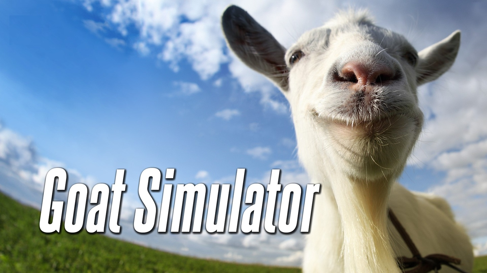

Goat Simulator Mobile
(Android / IOS)
At Piktiv, I worked on porting Goat Simulator Mobile from Unreal Engine 3 to Unreal Engine 4.
During this project, I quickly adapted to existing codebases, both the one we ported from and the one created by Piktiv before I joined.
In the first half of the project, I implemented gameplay features and systems, learning Unreal Engine and its subsystems such as physics, particle effects, and animations.
In the second half, I focused on non-gameplay systems such as achievements, loading screens, and push notifications, including learning to implement iOS-specific features using Objective-C.
Contributions
- Dialogue system
- Achievements
- Map events
- IOS compilation
- Way too many goats